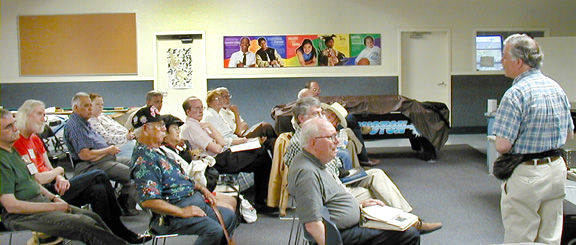
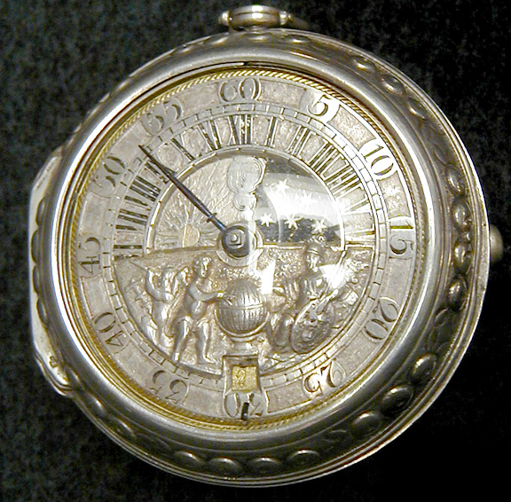
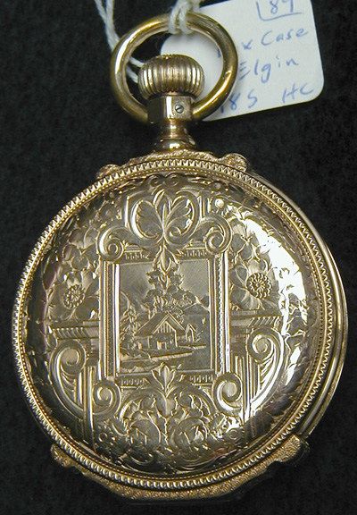
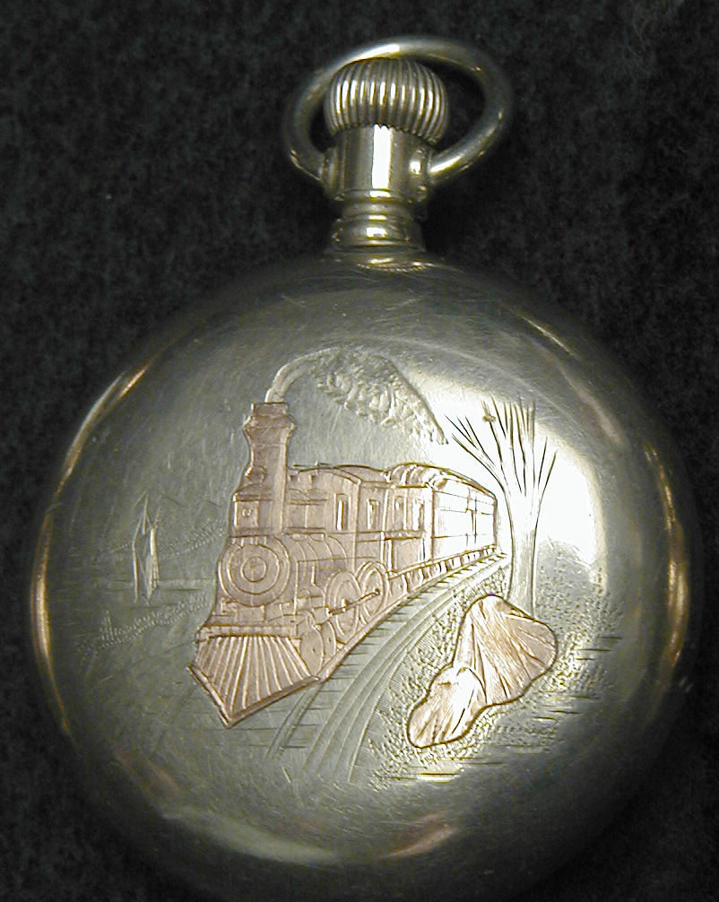
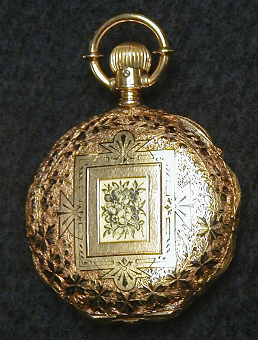

Four Generations of Watch Case Making… A Profile of Martin Matthews
This is an archived report. Meeting places, times and people have changed since it was written. See Meetings for current details.

Our May 9, 2004 meeting was held as usual at the Boys & Girls Club. Turnout was poor as that Sunday was Mother’s Day. We even had open MART tables. In the past we’ve rescheduled for the first Sunday in May, also with poor attendance. So, we decided to stay on schedule, the second Sunday, odd months.

Those who made the Membership meeting were treated to a special program. After a short business meeting, Chapter President Frank Keillor, turned the program over to member Don Levinson, a dealer in vintage watches, who presented a video (VHS) Four Generations of Watch Case Making. The video featured Martin Matthews, now living in Switzerland , making an outer pocket watch case. Martin is reported to be the last remaining custom, hand made, watch case maker in the world.

Viewers were shown how a sheet of precious metal was cut and formed by hand, creating a custom pocket watch case. Even the bow, spring and latch was hand crafted. One fascinating aspect of assembly was the use of a mouth blow pipe for soldering. The Video was approximately 55 minutes in length and shot under the credit of the Society of Goldsmiths, London in the year 2000. This was an altogether excellent presentation that included a display case with examples of the case makers art.

